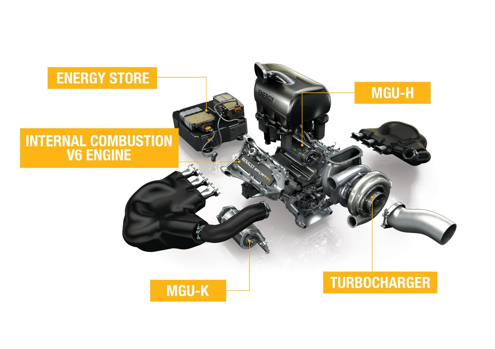
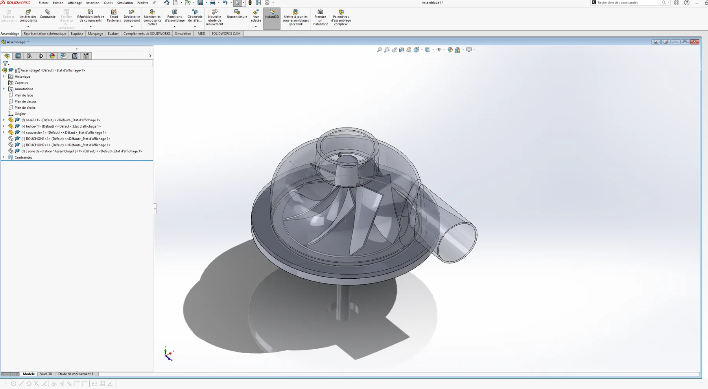
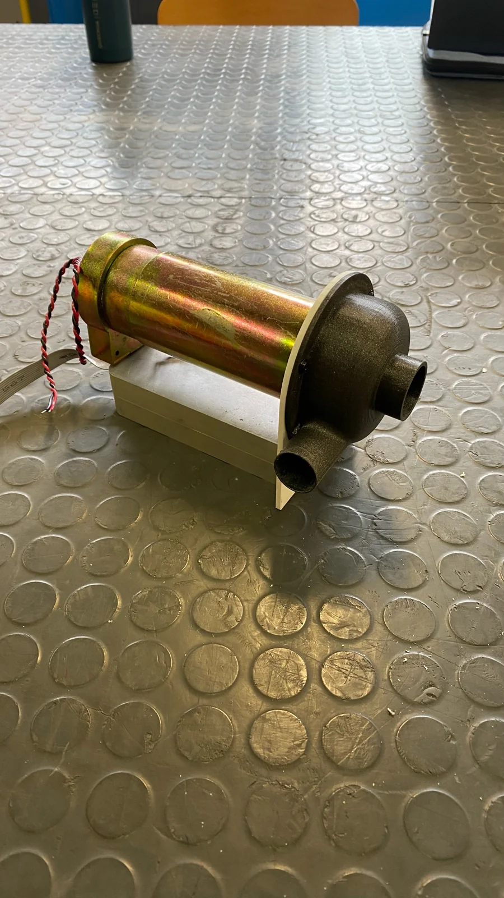
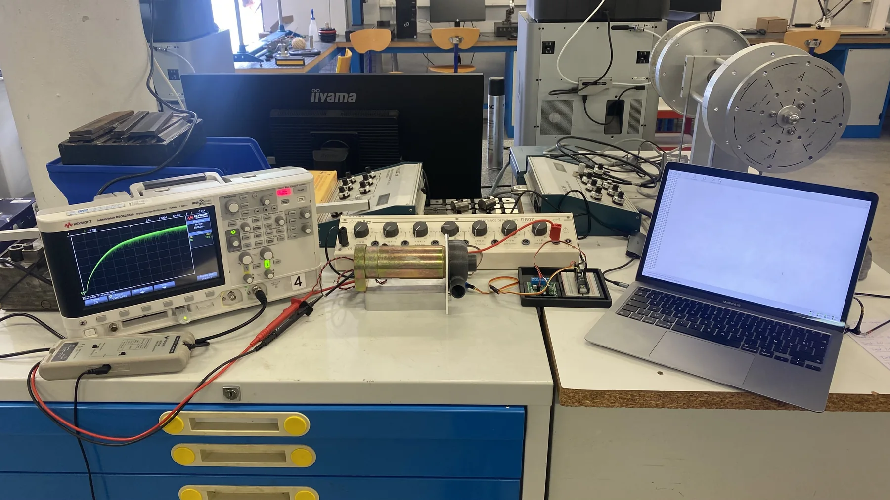
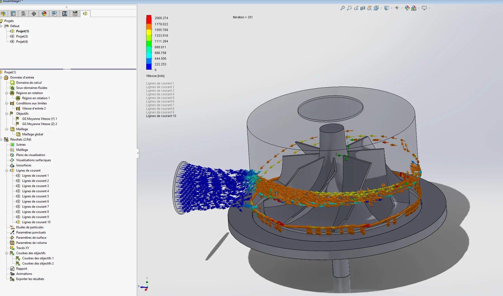

Experimental mechanics
MGU-H energy recovery
Designing a turbine–generator demonstrator to investigate how electrical loading affects recovered power and rotational speed.
- Context
- CPGE · Lycée Gustave Eiffel, Bordeaux
- Period
- 2022–2024
- My role
- Individual academic project
- Focus
- SolidWorks · Python · Arduino · Experimental testing

Finding a useful operating zone
My individual MGU-H project began with a practical question: how does electrical loading change the behaviour of the turbine driving a generator? I built a compressed-air turbine–generator bench, modelled its operating point and compared the calculation with my tests.
I found a useful recovery zone rather than a single rule to “draw as much current as possible”. At one end, electrical loading slows the rotor; at the other, mechanical friction and low current reduce useful output.
First, what is an MGU-H?
In the 2014–2025 Formula One turbo-hybrid architecture, the Motor Generator Unit–Heat (MGU-H) sat on the turbocharger shaft. Exhaust gas drove the turbine; the shaft also drove the compressor that fed the engine. As a generator, the MGU-H could take some mechanical power from that shaft and turn it into electricity for the energy store or MGU-K. As a motor, it could help spin the turbo to reduce response lag.

My project isolated one part of that idea. Compressed air replaced exhaust gas, a small turbine drove a DC generator, and resistors stood in for a controllable electrical load. I did not build a Formula One power unit; I used a bench-scale system to study the interaction between turbine speed and recovered electrical power.
From CAD to a working bench
I designed a small turbine and volute in SolidWorks, built printed prototypes, coupled the wheel to a DC generator and assembled a test bench. The rig let me change the resistive load and compare the generator’s electrical response with the behaviour predicted by my model.



Flow visualisation helped me review the geometry before manufacturing. The bench then let me test the engineering question directly: how does changing electrical resistance alter both shaft speed and useful output?

The model met the experiment
Changing the resistance revealed an optimum zone for useful recovered power. At low resistance, current and electromagnetic braking reduced rotor speed. At high resistance, the rotor turned more freely, but less current flowed to the load and mechanical friction took a larger share.
The calculation predicted the same overall shape observed in the tests. Superposing the two curves made the agreement visible and helped identify the useful range. The revised experimental maximum is approximately 6 W.
Electrical resistance and mechanical friction both limit useful recovery. The optimum comes from balancing the two, not maximizing either current or speed alone.
Understanding the small difference
The calculated and measured curves are close, with a modest difference around the optimum. The analytical model simplifies the drive torque and friction, while the prototype has real losses and measurement variation. Those approximations explain why the curves do not coincide exactly.
The important result is that two independent approaches—the model and the physical bench—point to the same operating behaviour and an identifiable zone for energy recovery.
What I took from the project
Building the demonstrator made the interaction between mechanical speed and electrical extraction concrete. It taught me to use calculations to predict a trend, then use tests to check and refine the explanation.
I came away with a positive result and a clearer engineering habit: connect a model to an experiment, and understand the small differences between them.